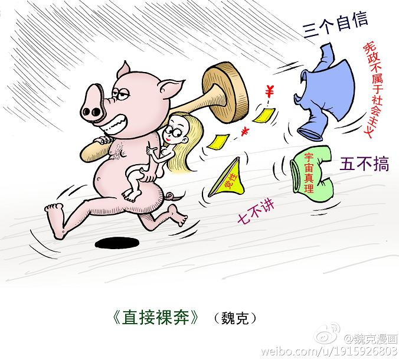
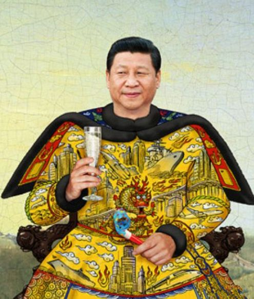

最近一个月，朝廷的宣传机器发布了好些谬论。今天汇总一下。通过这些朝廷论调，可以从某种程度上看清中共新掌门习近平的嘴脸。
最近一个月，"七不讲"是热门话题，所以先来聊聊它。据说这玩意儿主要是针对高校教师，规定课堂上不准讲如下7个方面的内容：
"七不讲"的禁令最早由华东政法大学教师张雪忠在新浪微博曝光。曝光之后，张雪忠的帐号被删除。紧接着，"七不讲"成为国内网站严厉封锁的敏感词。慕容雪村据说也因为谈论"7不讲"，他在4大门户网站的微博帐号统统被删。
一开始很多人怀疑"七不讲"，因为这个禁令实在是有点荒诞。但后来又曝光了"9号文件"和"16条"，而且内容上前后呼应。所以基本上可以确定，"七不讲"的禁令是真实的。
顺便插一句：对于俺这种长期抹黑党国的人，"七不讲"简直就是指路明灯啊！朝廷不希望讲的内容，也就是俺需要大力普及的内容。看来俺得加把劲，多写点"7不讲"的内容。
所谓的9号文件，指的是中共中央办公厅发布的2013年的第9号文件，内容是《关于当前意识形态领域情况的通报》。大伙儿可以看维基百科的介绍。
有人把9号文件的内容总结如下：
所谓的"16条"，全称是"关于加强和改进高校青年教师思想政治工作的若干意见"。5月28日刊登在教育部官网（链接在"这里"）。根据教育部官网显示的日期，该内容是在5月4日出台的。正好跟张雪忠"七不讲"的时间接近。
为了和前面的"7不讲"、"9号文件"相呼应，天朝宣传机器近期开足马力进行忽悠。其中有些忽悠非常幼稚可笑（比如"我们信仰的主义，乃是宇宙的真理"）。有时候俺甚至觉得：这么弱智的言论居然出自中央级的媒体，说不定其中的编辑是"高级黑"。
（以下整理的链接，全部摘自朝廷的喉舌，部分精彩言论已加入《汇总天朝的雷人语录》）
只有去中国才能看到未来——中国正迎来自信时代 @ 《求是》
杨晓青：宪政与人民民主制度之比较研究 @ 人民网
《解放军报》：中国梦的自信在哪里 @ 新华网
《环球时报》："宪政"是兜圈子否定中国发展之路 @ 人民网
刘亚洲：坚守神圣的"党性" @ 人民网
《党建》：认清"宪政"的本质 @ 人民网
《人民日报》：坚定"三个自信"，坚定不移走中国道路 @ 中国新闻网

如果你仔细阅读俺整理的这几个链接，会发现"三个自信"（道路自信、理论自信、制度自信）出现的频率很高。俺来帮大伙儿分析一下，为啥朝廷反复强调"三个自信"？
咱们朝廷的某些官方宣传，其实是要从侧面甚至反面来理解的。比如每次发生重大事故或灾害，如果官方媒体反复强调"当地民众情绪稳定"，那通常说明当地民众很不爽，情绪已经很不稳。
如今习近平反复强调"三个自信"，恰恰说明朝廷在"道路、理论、制度"三方面，都极度缺乏自信。如果朝廷真的很自信，还需要这样反复强调吗？还需要对高校教师下达禁言令吗？还需要大力删除网民的议论吗？
除了缺乏自信，公信力也很成问题。不客气地说，朝廷的公信力已经是负的。比如当某个谣言流传，朝廷越是辟谣，民众越是相信谣言（关于这点，俺在《朝廷为何落入“塔西佗陷阱”》一文有专门的分析）一个缺乏公信力的政府，怎么可能主导舆论？
在俺整理的链接中，朝廷喉舌连"宇宙的真理"都用上了。使用这么低劣的忽悠手法，感觉朝廷已经黔驴技穷。
很多网友总是对朝廷抱有不切实际的幻想，寄希望于朝廷搞改良来实现民主化和宪政。俺在一年前写过一篇《为啥改良不可行》分析了：朝廷是不可能主动改良的。
咱天朝搞的是一党专政（党领导一切）；而党实际上是被权贵集团把持的。权贵们怎么可能主动搞民主化和宪政捏？一旦搞了宪政和民主化，就意味着交出权力，这岂不是自断财路？权贵们可没这么愚蠢。
看完真理部近期的忽悠，大伙儿应该明白一点——朝廷已经把（自上而下）政改的大门给关闭了。那些指望朝廷主动政改的改良派，可以洗洗睡了。
天朝的政治变革，今后只剩下两条路——要么暴力革命，要么非暴力革命。当然，俺一直是鼓吹"非暴力革命"的。在《谈革命》系列中，俺会继续普及"非暴力革命"的常识。

如今的习近平，是权贵中的权贵，太子党中的太子党。看看俺整理的《太子党关系网络》，你应该能体会到这一点。
像他这种人，通常有个毛病，以为天朝的江山理所应当就是他们的。所以，习近平连遮羞布都不要了，直接赤裸裸地宣称："宪政是姓资的，不是姓社的"，社会主义的中国不允许搞宪政。
可悲的是，还有少数痴情的粉丝在替习近平辩护。他们的理由是：这些官煤的论调是出自刘云山（主管意识形态的常委），而不是出自习近平。但这个理由是站不住脚的。比如前面提到的"9号文件"是中央办公厅发布的正式文件，没有总书记的认可，怎么可能发得出来？比如朝廷喉舌近期的联合忽悠，涉及《人民日报》、《求是》、《解放军报》、《环球时报》等多个中央喉舌。没有总书记的首肯，怎么可能有如此大规模的舆论攻势？
俺博客上，和本文相关的帖子（需翻墙）：
每周转载：两会、修宪、终身制、翻白眼、大外宣（各方报道和网友评论，多图）
每周转载：习呆呆上台五周年，糗事一箩筐（图片及网友评论）
谈革命(系列)
聊聊天朝的政治体制
若政治制度不公平，则经济改革无意义——谈谈天朝这个大赌场
朝廷为何落入"塔西佗陷阱"
天朝民众的心理分析：圣君情结
汇总天朝的雷人语录
★朝廷的禁令
最近一个月，"七不讲"是热门话题，所以先来聊聊它。据说这玩意儿主要是针对高校教师，规定课堂上不准讲如下7个方面的内容：
1. 普世价值
2. 新闻自由
3. 公民社会
4. 公民权利
5. 党的历史错误
6. 权贵资产阶级
7. 司法独立
"七不讲"的禁令最早由华东政法大学教师张雪忠在新浪微博曝光。曝光之后，张雪忠的帐号被删除。紧接着，"七不讲"成为国内网站严厉封锁的敏感词。慕容雪村据说也因为谈论"7不讲"，他在4大门户网站的微博帐号统统被删。
一开始很多人怀疑"七不讲"，因为这个禁令实在是有点荒诞。但后来又曝光了"9号文件"和"16条"，而且内容上前后呼应。所以基本上可以确定，"七不讲"的禁令是真实的。
顺便插一句：对于俺这种长期抹黑党国的人，"七不讲"简直就是指路明灯啊！朝廷不希望讲的内容，也就是俺需要大力普及的内容。看来俺得加把劲，多写点"7不讲"的内容。
所谓的9号文件，指的是中共中央办公厅发布的2013年的第9号文件，内容是《关于当前意识形态领域情况的通报》。大伙儿可以看维基百科的介绍。
有人把9号文件的内容总结如下：
1. 中共不更名易帜，阐明了"方向"问题；
2. 改革是完善社会主义，不是完蛋社会主义，阐明了"道路"问题；
3. 将清除不合格党员，解决党内依靠谁的"路线"问题；
4. 中共将开展群众路线教育，解决依靠谁、为了谁的"方法"问题；
5. 两个三十年，前后不能互相否定，解决了意识形态的"边界"问题；
6. 重提毛泽东思想，解决信仰什么的问题。
所谓的"16条"，全称是"关于加强和改进高校青年教师思想政治工作的若干意见"。5月28日刊登在教育部官网（链接在"这里"）。根据教育部官网显示的日期，该内容是在5月4日出台的。正好跟张雪忠"七不讲"的时间接近。
(以下是摘录)
深入开展马克思列宁主义、毛泽东思想、中国特色社会主义理论体系教育，深入学习实践科学发展观。加强理想信念教育，组织青年教师学习党的基本理论、基本路线、基本纲领、基本经验、基本要求，努力提高青年教师政治理论素养，进一步增强对中国特色社会主义的理论认同、政治认同、情感认同，坚定道路自信、理论自信、制度自信，自觉践行社会主义核心价值体系，坚持正确政治方向。加强中国梦的宣传教育，组织青年教师深入学习领会中国梦的精神实质，凝聚起实现中国梦的强大精神力量。
★朝廷的忽悠
为了和前面的"7不讲"、"9号文件"相呼应，天朝宣传机器近期开足马力进行忽悠。其中有些忽悠非常幼稚可笑（比如"我们信仰的主义，乃是宇宙的真理"）。有时候俺甚至觉得：这么弱智的言论居然出自中央级的媒体，说不定其中的编辑是"高级黑"。
（以下整理的链接，全部摘自朝廷的喉舌，部分精彩言论已加入《汇总天朝的雷人语录》）
只有去中国才能看到未来——中国正迎来自信时代 @ 《求是》
(以下是忽悠内容的摘录)
今天的中国处于1840年以来最好的时期，今天的中国有1840年以来最好的制度，今天的中国是全球各主要国家中发展最好的国家。这三个事实判断，就构成了"道路自信、理论自信、制度自信"的坚实基础。
......
中国最高权力的更替一方面具有传统的"禅让"色彩，但又打破古代"禅让"终身制的局限，实行的是一党领导、全国选拔、长期培养、年龄限制、定期更替。
杨晓青：宪政与人民民主制度之比较研究 @ 人民网
(以下是忽悠内容的摘录)
人民民主制度绝不可以称为"社会主义宪政"
......
这里须特别注意，切不可单独提"宪法和法律至上"。因为党的事业至上、人民利益至上和宪法至上是不可分离的整体，在党的领导下，为了人民的利益，通过法定程序，宪法和法律都是可以修改的。
《解放军报》：中国梦的自信在哪里 @ 新华网
(以下是忽悠内容的摘录)
中国梦以信仰为魂、自觉为根。信仰如炬信心满满，寓理弘志意气风发。面对当今复杂多变的国际环境、艰巨复杂的国内改革发展任务、党所面临的严峻考验和危险，极大地增强同心共筑中国梦的自信，首要的是始终同心坚守中国特色社会主义信仰，笃信"我们信仰的主义，乃是宇宙的真理"。
《环球时报》："宪政"是兜圈子否定中国发展之路 @ 人民网
(以下是忽悠内容的摘录)
中国的国家道路已经选定，中国早已迈过十字路口，行走在"有中国特色社会主义"的路上。这是中国人民历经苦难好不容易选出来的，中国宪法从一定意义上说是对这条国家道路的保卫。想引中国走另一条路，整个西方世界加起来也没有这个力量，国内少数有不同意见的人更不行。
刘亚洲：坚守神圣的"党性" @ 人民网
(以下是忽悠内容的摘录)
还有一个经典场合。众人犹疑时，带头人坚定而庄严地说出这几个字："我以党性保证"。这个时候，"党性"二字因"神圣"而充满"神性"。众人闻声而动，相信的就是"党性"，也如同基督徒相信"上帝"。
......
30多年间，一群满怀坚定信仰的无产阶级革命者，选择了中国共产党这面旗帜，带领人民历经腥风血雨，建立起新生国家，其艰难程度，与摩西带领以色列人在追杀中荒野流浪40年，最终到达"流着奶和蜜"的"上帝应许之地"，何其相似。不同的是，摩西手中高举的，是上帝赐与了魔力的神奇手杖；而人民那时跟着共产党走，是因为那一代共产党人，把"党性"二字如火炬般高擎。
《党建》：认清"宪政"的本质 @ 人民网
(以下是忽悠内容的摘录)
"宪政"一词无论从理论概念来说，还是从制度实践来说，都是特指资产阶级宪法的实施。
"宪政"主张指向非常明确，就是要在中国取消共产党的领导，颠覆社会主义政权。
不能把"宪政"作为我国的基本政治概念，以落入其背后隐藏着的"话语陷阱"。
......
从历史唯物主义的观点出发，宪政归根结底是资产阶级维护自身统治、实行阶级压迫的工具。
......
一旦我们采用了"宪政"或"社会主义宪政"的语词，把"宪政"当作指导性的基本政治概念，国内自由主义主导的宪政思潮会更加泛滥，社会思想领域会更加混乱，境内外敌对势力就有了对这一新提法做出肆意解读的空间，一步一步地来逼迫我们用自由主义的宪政理论主导所谓的"社会主义宪政"，干扰我国政治体制改革的进程和方向。
《人民日报》：坚定"三个自信"，坚定不移走中国道路 @ 中国新闻网
(以下是忽悠内容的摘录)
西方的那套理论，新自由主义也好，民主社会主义也罢，既不符合中国国情，也不反映中国人民和中华民族的根本利益，不可能为当代中国指出科学正确的发展道路和发展方向。
★俺的点评
◇舆论领域逐渐失控
如果你仔细阅读俺整理的这几个链接，会发现"三个自信"（道路自信、理论自信、制度自信）出现的频率很高。俺来帮大伙儿分析一下，为啥朝廷反复强调"三个自信"？
咱们朝廷的某些官方宣传，其实是要从侧面甚至反面来理解的。比如每次发生重大事故或灾害，如果官方媒体反复强调"当地民众情绪稳定"，那通常说明当地民众很不爽，情绪已经很不稳。
如今习近平反复强调"三个自信"，恰恰说明朝廷在"道路、理论、制度"三方面，都极度缺乏自信。如果朝廷真的很自信，还需要这样反复强调吗？还需要对高校教师下达禁言令吗？还需要大力删除网民的议论吗？
除了缺乏自信，公信力也很成问题。不客气地说，朝廷的公信力已经是负的。比如当某个谣言流传，朝廷越是辟谣，民众越是相信谣言（关于这点，俺在《朝廷为何落入“塔西佗陷阱”》一文有专门的分析）一个缺乏公信力的政府，怎么可能主导舆论？
在俺整理的链接中，朝廷喉舌连"宇宙的真理"都用上了。使用这么低劣的忽悠手法，感觉朝廷已经黔驴技穷。
◇体制内改良已经没戏
很多网友总是对朝廷抱有不切实际的幻想，寄希望于朝廷搞改良来实现民主化和宪政。俺在一年前写过一篇《为啥改良不可行》分析了：朝廷是不可能主动改良的。
咱天朝搞的是一党专政（党领导一切）；而党实际上是被权贵集团把持的。权贵们怎么可能主动搞民主化和宪政捏？一旦搞了宪政和民主化，就意味着交出权力，这岂不是自断财路？权贵们可没这么愚蠢。
看完真理部近期的忽悠，大伙儿应该明白一点——朝廷已经把（自上而下）政改的大门给关闭了。那些指望朝廷主动政改的改良派，可以洗洗睡了。
天朝的政治变革，今后只剩下两条路——要么暴力革命，要么非暴力革命。当然，俺一直是鼓吹"非暴力革命"的。在《谈革命》系列中，俺会继续普及"非暴力革命"的常识。
◇习近平不是什么好鸟
如今的习近平，是权贵中的权贵，太子党中的太子党。看看俺整理的《太子党关系网络》，你应该能体会到这一点。
像他这种人，通常有个毛病，以为天朝的江山理所应当就是他们的。所以，习近平连遮羞布都不要了，直接赤裸裸地宣称："宪政是姓资的，不是姓社的"，社会主义的中国不允许搞宪政。
可悲的是，还有少数痴情的粉丝在替习近平辩护。他们的理由是：这些官煤的论调是出自刘云山（主管意识形态的常委），而不是出自习近平。但这个理由是站不住脚的。比如前面提到的"9号文件"是中央办公厅发布的正式文件，没有总书记的认可，怎么可能发得出来？比如朝廷喉舌近期的联合忽悠，涉及《人民日报》、《求是》、《解放军报》、《环球时报》等多个中央喉舌。没有总书记的首肯，怎么可能有如此大规模的舆论攻势？
俺博客上，和本文相关的帖子（需翻墙）：
每周转载：两会、修宪、终身制、翻白眼、大外宣（各方报道和网友评论，多图）
每周转载：习呆呆上台五周年，糗事一箩筐（图片及网友评论）
谈革命(系列)
聊聊天朝的政治体制
若政治制度不公平，则经济改革无意义——谈谈天朝这个大赌场
朝廷为何落入"塔西佗陷阱"
天朝民众的心理分析：圣君情结
汇总天朝的雷人语录
版权声明
本博客所有的原创文章，作者皆保留版权。转载必须包含本声明，保持本文完整，并以超链接形式注明作者编程随想和本文原始地址：
https://program-think.blogspot.com/2013/06/weekly-share-53.html
本博客所有的原创文章，作者皆保留版权。转载必须包含本声明，保持本文完整，并以超链接形式注明作者编程随想和本文原始地址：
https://program-think.blogspot.com/2013/06/weekly-share-53.html